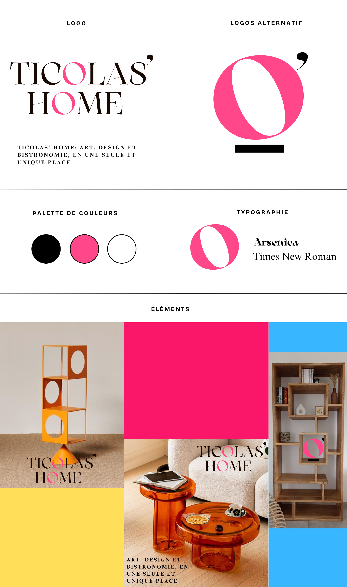

Janvier 2025
Ticolas Market est un projet fictif visant à mettre en valeur les produits locaux au travers d'une plateforme moderne et chaleureuse.
Le projet explore l’identité visuelle, la stratégie de communication et l’expérience utilisateur pour un supermarché de proximité moderne.
Recommandation marketing, Spot radio, Stratégie digitale
Audio, Illustrator | Fait avec Wissale
Ticolas’ Home est bien plus qu’un simple bistrot ou une galerie d’art : c’est une expérience immersive, chaleureuse et accessible, où la bistronomie rencontre le design contemporain. Pensé comme un véritable appartement à vivre, ce lieu unique mêle restauration raffinée et vente d’objets d’art, créant une atmosphère conviviale, élégante et surprenante.
Le projet s’articule autour d’une double proposition : savourer une cuisine inventive dans un cadre inspiré, tout en découvrant et en achetant des œuvres de designers et artisans émergents. Chaque objet, des assiettes aux meubles, est sélectionné pour son esthétisme, sa qualité et son histoire.
À travers un spot radio mettant en scène un couple attablé, discutant à la fois de leur repas et du mobilier qui les entoure, nous avons souhaité illustrer cette fusion inédite entre plaisir gustatif et coup de cœur artistique. L’univers sonore ( piano feutré, ambiance de table animée ) renforce cette sensation d’être "chez soi ailleurs".
Le slogan « Art, design et bistronomie, en une seule et unique place » résume l’essence du projet : faire de Ticolas’ Home un lieu de vie, de découverte et de partage, qui invite à la curiosité autant qu’à la gourmandise.